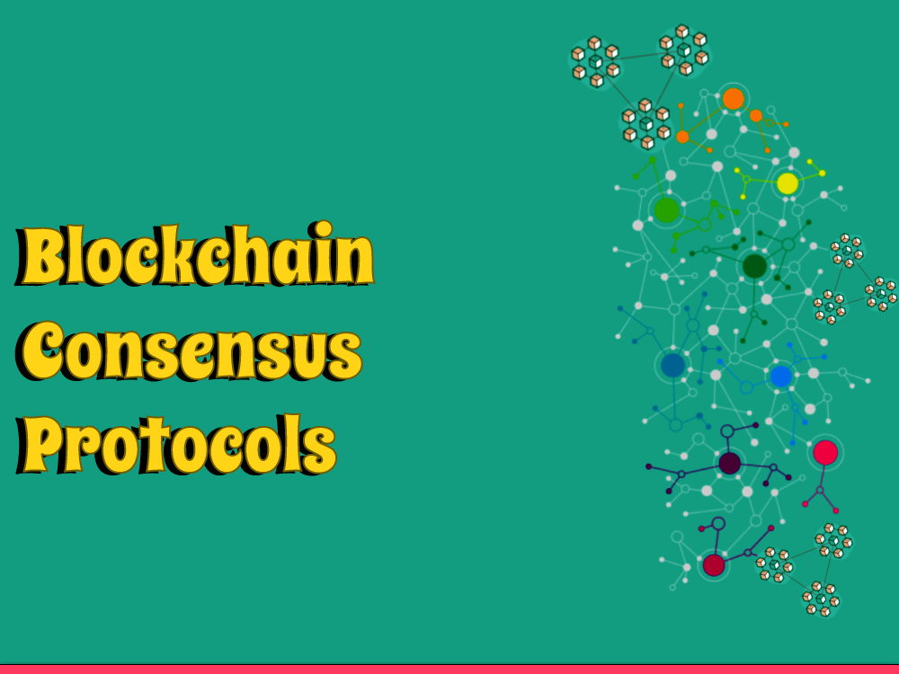

Blockchain innovation has been causing disturbances lately, with its capability to upset different enterprises like money, medical services, and inventory network the board. At the core of blockchain innovation lies an idea called agreement conventions, which are the systems that guarantee that the data on the blockchain is exact, secure, and straightforward.
What are Agreement Protocols?
Agreement conventions are the guidelines that oversee how hubs in a blockchain network settle on the present status of the blockchain. In more straightforward terms, they are the manner by which the various members in the blockchain organization can agree on the legitimacy of an exchange or information on the blockchain. There are a few kinds of agreement conventions, and each enjoys its remarkable benefits and hindrances.
What Is an Agreement Mechanism?
An agreement component is a cycle or convention utilized in a circulated framework, for example, a blockchain, to accomplish understanding among hubs or members on a common condition of the organization. As such, it is a strategy for accomplishing agreement or settlement on the legitimacy of exchanges or different information in a decentralized framework where there is no focal power or confided in mediator.
Agreement systems are significant in blockchain innovation since they empower trust and unwavering quality in an organization where members may not be aware or trust one another. They guarantee that all hubs in the organization have a predictable and exact duplicate of the record, and keep noxious entertainers from messing with the information.
There are a wide range of kinds of agreement components utilized in blockchain innovation, each with its own assets and shortcomings. Probably the most widely recognized sorts of agreement components incorporate Verification of Work (PoW), Confirmation of Stake (PoS), Assigned Evidence of Stake (DPoS), Viable Byzantine Adaptation to internal failure (PBFT), and numerous others. Every one of these systems has its own arrangement of rules and necessities for accomplishing agreement, and might be more qualified for various use cases relying upon elements like speed, security, energy proficiency, and the sky is the limit from there.
Proof-of-Work
Evidence of-Work (PoW) is the most famous agreement convention utilized in blockchain networks today. In a PoW blockchain, hubs contend to tackle complex numerical conditions to approve exchanges. The main hub to address the condition is compensated with new cryptographic money coins, and the approved exchange is added to the blockchain. PoW is an exceptionally solid agreement convention since it requires a ton of computational ability to go after the organization, making it for all intents and purposes difficult to change the blockchain's set of experiences. Be that as it may, PoW is likewise sluggish and energy-serious, which is a downside.
Proof-of-Stake
Verification of-Stake (PoS) is one more agreement convention utilized in blockchain networks. In a PoS blockchain, rather than hubs contending to settle numerical conditions, they are chosen to approve exchanges in light of the quantity of coins they hold in the organization. At the end of the day, the more coins a hub has, the higher its possibilities being chosen to approve exchanges. PoS is a lot quicker and more energy-productive than PoW since it doesn't need as much computational power. Nonetheless, PoS is likewise less secure than PoW since going after the organization overwhelmingly of coins is simpler.
Delegated Evidence of-Stake
Designated Verification of-Stake (DPoS) is a variety of PoS utilized in some blockchain networks. In a DPoS blockchain, hubs vote to choose a gathering of representatives who are liable for approving exchanges. The representatives are chosen in view of the quantity of votes they get, and they are compensated with exchange expenses for their work. DPoS is quicker and more energy-effective than PoW and PoS since it just requires a little gathering of representatives to approve exchanges. Be that as it may, DPoS is likewise less decentralized than PoW and PoS on the grounds that the ability to approve exchanges is gathered in the possession of a couple of representatives.
Conclusion
In end, agreement conventions are basic to the working of blockchain networks. They guarantee that the data on the blockchain is exact, secure, and straightforward. There are a few kinds of agreement conventions, each with its novel benefits and inconveniences
As blockchain innovation keeps on developing, new agreement conventions will probably arise, each with its extraordinary way to deal with accomplishing agreement in a decentralized organization.